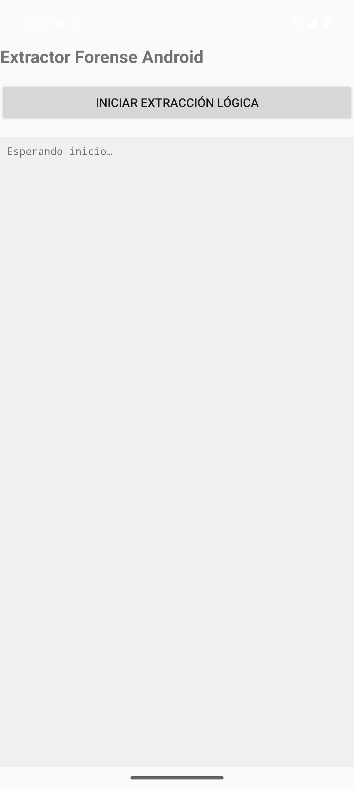
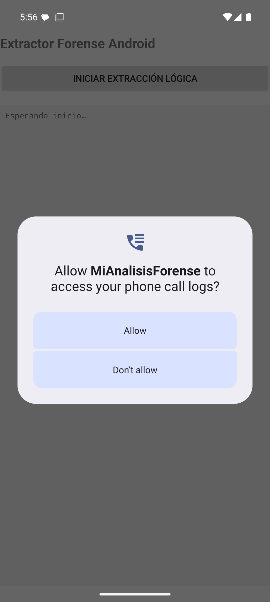
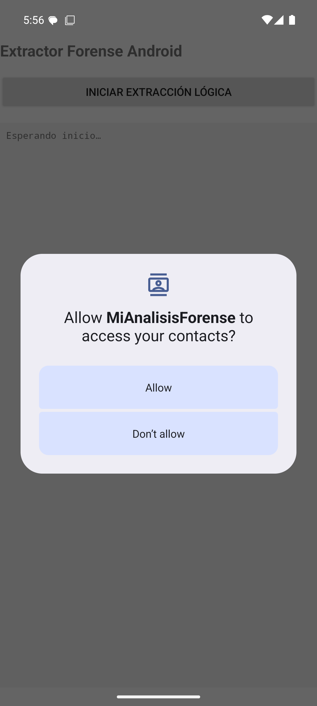
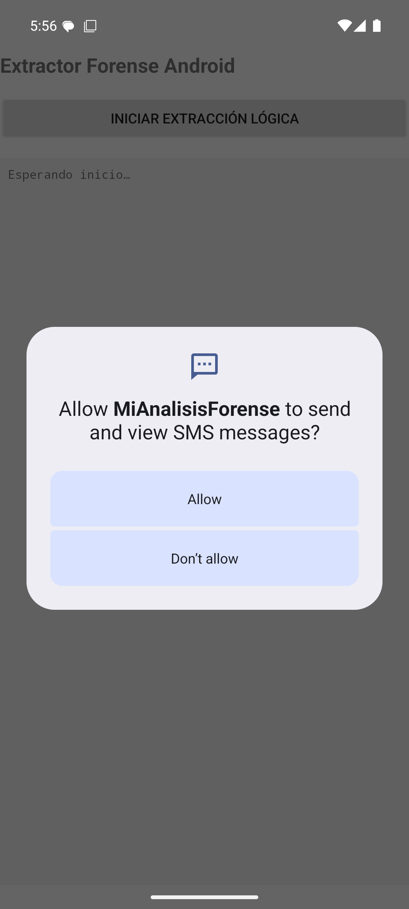
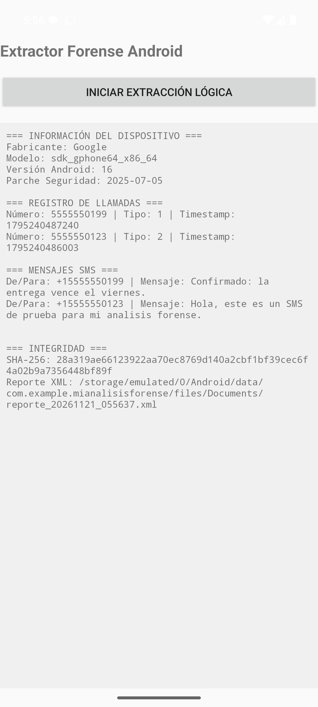

| Asignatura: | Desarrollo de Aplicaciones Móviles Nativas |
| Práctica: | Práctica 17 |
| Alumno: | Angel Frausto Robles |
| Grupo: | 7CM4 |
| Fecha: | 21 de noviembre de 2026 |
El análisis forense móvil busca identificar, preservar, extraer, analizar y presentar datos de un teléfono de forma que conserven validez como evidencia. El proceso típico es: identificación y preservación (aislar el equipo de redes para no alterarlo), adquisición (extracción lógica de datos accesibles, del sistema de archivos, o física bit a bit), análisis e interpretación, y documentación con un informe trazable. En Android, el acceso a los datos está limitado por el modelo de permisos y el sandboxing: una app propia solo puede leer lo que el usuario le conceda explícitamente, a través de ContentResolver sobre los proveedores de contenido del sistema (registro de llamadas, SMS, contactos).
Objetivo: construir una app (MiAnalisisForense) que, con permiso del usuario, realice una extracción lógica del registro de llamadas y los SMS, calcule un hash SHA-256 del reporte para preservar su integridad (cadena de custodia) y lo exporte a un archivo estructurado (XML).
Proyecto MiAnalisisForense en Java, minSdk 24, ejecutado en el mismo emulador Android 16 (API 36) de las demás prácticas. Como el emulador no tiene llamadas ni SMS reales, se sembraron datos de prueba sobre el propio dispositivo de pruebas (nunca de un tercero): dos llamadas con adb shell content insert --uri content://call_log/calls, y dos SMS simulados con el comando de la consola del emulador sms send <número> <mensaje> (el proveedor content://sms solo acepta escritura real desde la app con el rol de SMS por defecto, así que un content insert directo no basta; sms send simula una recepción real a través del módem GSM emulado y la entrega a la app de Mensajes).
MANAGE_EXTERNAL_STORAGE que sugiere la guía es un permiso especial que Google Play exige declarar y justificar por separado; para una app de este alcance no hace falta: el reporte se exporta con getExternalFilesDir(), almacenamiento específico de la app que no requiere ningún permiso adicional desde Android 10 (API 29). Se declaran únicamente los permisos realmente usados: READ_CALL_LOG, READ_SMS, READ_CONTACTS, READ_PHONE_STATE y ACCESS_NETWORK_STATE.Al pulsar «Iniciar Extracción Lógica» se verifican los permisos y, si faltan, se solicitan en tiempo de ejecución; al concederlos, onRequestPermissionsResult dispara la extracción. extractCallLogs() y extractSms() consultan CallLog.Calls.CONTENT_URI y Telephony.Sms.CONTENT_URI con un Cursor; el reporte final se hashea con SHA-256 para que cualquier alteración posterior sea detectable:
private void runForensicExtraction() {
StringBuilder report = new StringBuilder();
report.append("=== INFORMACIÓN DEL DISPOSITIVO ===\n");
report.append("Fabricante: ").append(Build.MANUFACTURER).append("\n");
report.append("Modelo: ").append(Build.MODEL).append("\n");
report.append("Versión Android: ").append(Build.VERSION.RELEASE).append("\n");
report.append("Parche Seguridad: ").append(Build.VERSION.SECURITY_PATCH).append("\n\n");
report.append("=== REGISTRO DE LLAMADAS ===\n").append(extractCallLogs()).append("\n");
report.append("=== MENSAJES SMS ===\n").append(extractSms()).append("\n");
String finalData = report.toString();
String sha256 = calculateSHA256(finalData);
tvLog.setText(finalData + "\n=== INTEGRIDAD ===\nSHA-256: " + sha256);
String rutaXml = exportarXml(finalData, sha256); // Paso 6: formato tabular (XML)
if (rutaXml != null) tvLog.append("\nReporte XML: " + rutaXml);
}
private String extractCallLogs() {
StringBuilder calls = new StringBuilder();
Cursor cursor = getContentResolver().query(CallLog.Calls.CONTENT_URI, null, null, null,
CallLog.Calls.DATE + " DESC");
if (cursor != null) {
int numberIdx = cursor.getColumnIndex(CallLog.Calls.NUMBER);
int typeIdx = cursor.getColumnIndex(CallLog.Calls.TYPE);
int dateIdx = cursor.getColumnIndex(CallLog.Calls.DATE);
while (cursor.moveToNext()) {
calls.append("Número: ").append(cursor.getString(numberIdx))
.append(" | Tipo: ").append(cursor.getString(typeIdx))
.append(" | Timestamp: ").append(cursor.getString(dateIdx)).append("\n");
}
cursor.close();
}
return calls.toString();
}





El reporte se guarda además como archivo XML (etiquetas <dispositivo>, <contenido> y <sha256>) en getExternalFilesDir(Environment.DIRECTORY_DOCUMENTS). Se verificó con adb shell cat sobre el archivo generado:
<?xml version="1.0" encoding="UTF-8"?>
<reporteForense>
<dispositivo>
<fabricante>Google</fabricante>
<modelo>sdk_gphone64_x86_64</modelo>
<version>16</version>
</dispositivo>
<contenido>=== INFORMACIÓN DEL DISPOSITIVO ===
Fabricante: Google
Modelo: sdk_gphone64_x86_64
Versión Android: 16
Parche Seguridad: 2025-07-05
=== REGISTRO DE LLAMADAS ===
Número: 5555550199 | Tipo: 1 | Timestamp: 1795240487240
Número: 5555550123 | Tipo: 2 | Timestamp: 1795240486003
=== MENSAJES SMS ===
De/Para: +15555550199 | Mensaje: Confirmado: la entrega vence el viernes.
De/Para: +15555550123 | Mensaje: Hola, este es un SMS de prueba para mi analisis forense.
</contenido>
<sha256>28a319ae66123922aa70ec8769d140a2cbf1bf39cec6f4a02b9a7356448bf89f</sha256>
</reporteForense>
La parte técnica de esta práctica (consultar ContentResolver y calcular un hash) es sencilla; lo que de verdad exige cuidado es el principio de no alteración: cualquier herramienta forense nativa debe declarar solo los permisos que usa, pedirlos en tiempo de ejecución y no tocar nada fuera de su propio sandbox. El reto real de la práctica terminó siendo generar datos de prueba realistas sin hardware de telefonía: el registro de llamadas se puede sembrar directamente por content insert, pero el proveedor de SMS de Android solo acepta escritura desde la app con el rol de «SMS por defecto», así que hubo que simular una recepción real con el comando sms send de la consola del emulador. Con el reporte, su hash SHA-256 y el XML exportado, queda una cadena de evidencia completa y verificable para un solo dispositivo (el propio equipo de pruebas), sin tocar datos de terceros.